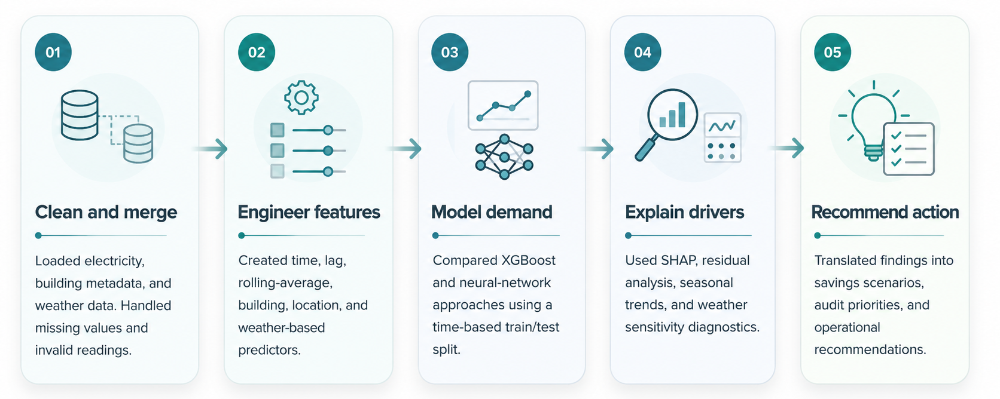
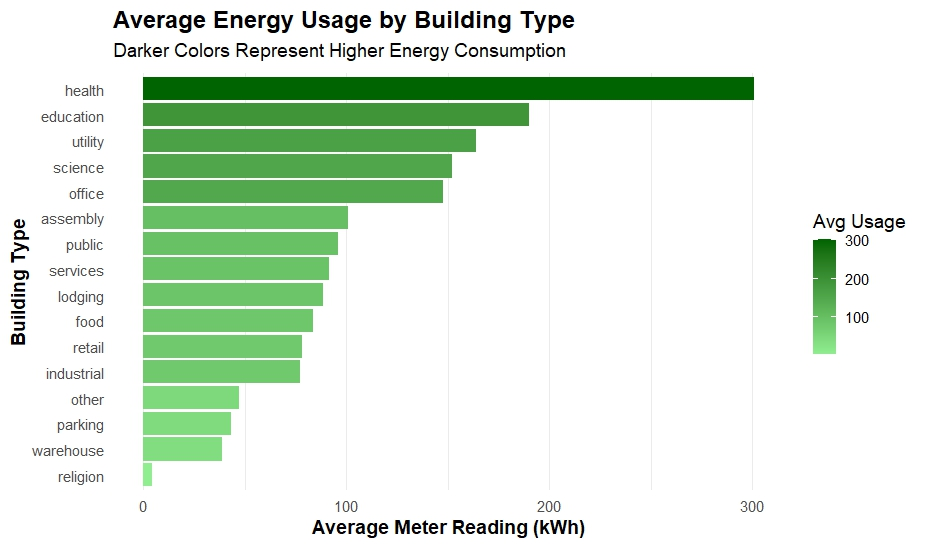
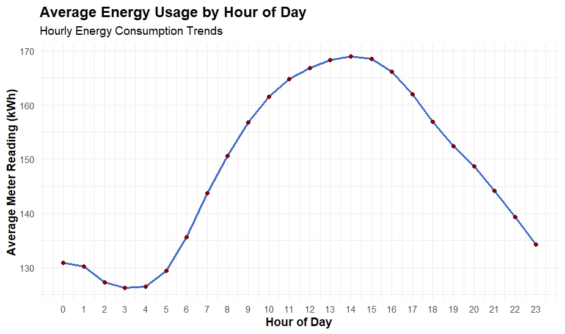
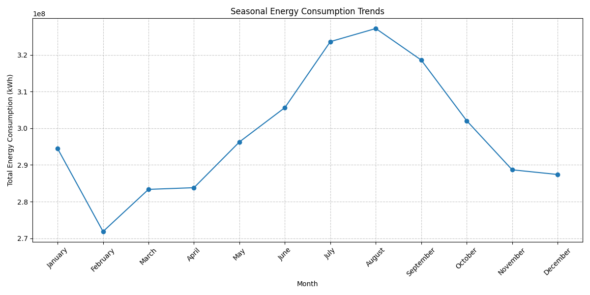
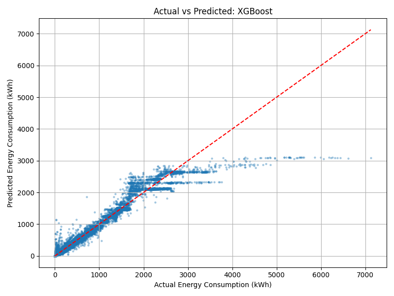
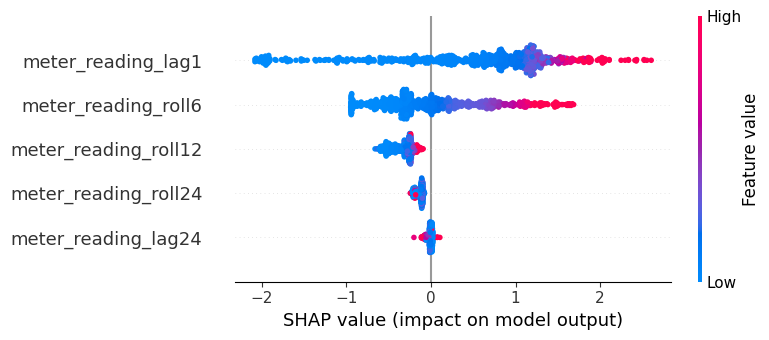
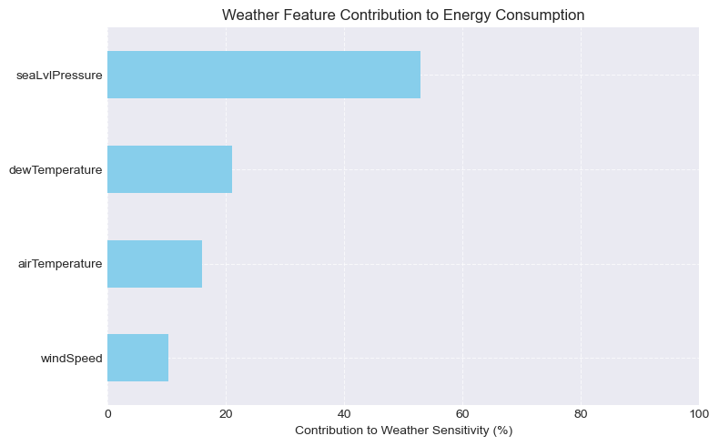

1st Place Inter-University Data Science Olympiad Project
Commercial Building Energy Forecasting and Optimization
An XGBoost-based forecasting and analytics pipeline for predicting energy demand, identifying inefficiencies, and translating model outputs into operational energy-saving strategy.
Built for the Data Masters Challenge Olympiad, this project analyzed commercial-building energy consumption across a large REIT portfolio under a tight competition deadline. The work combined data cleaning, time-series feature engineering, predictive modeling, explainability, residual diagnostics, and executive-ready business recommendations.
Project Overview
This project developed a forecasting and decision-support workflow for building energy optimization. The goal was not only to predict future consumption, but also to identify where energy waste was concentrated, which factors were driving demand, and how the client could prioritize efficiency investments.
Competition Result
The project was completed for the Data Masters Challenge Olympiad, an inter-university competition involving teams from Canisius University, NY and the University of Alberta. The challenge required teams to clean messy energy data, build machine learning models, create visual insights, and deliver a structured business report under a compressed deadline.
Award outcome
1st Place, Data Masters Challenge Olympiad 2025
The final submission combined predictive modeling, exploratory analysis, business insight development, and executive recommendations for reducing energy waste across a commercial real estate portfolio.
Inter-university competition
Team-based delivery
Forecasting and business strategy
The Energy Efficiency Problem
The simulated client was a real estate investment trust managing more than 1,600 commercial buildings across North America and Europe. The organization faced rising energy costs, carbon penalties, and scattered meter data with missing values, inconsistent readings, and seasonal demand patterns.
Messy energy data
The raw workflow involved electricity readings, building metadata, and weather data, requiring cleaning, reshaping, merging, and missing-value handling before modeling.
Forecasting requirement
The client needed future energy-consumption predictions to support planning, efficiency targeting, and portfolio-level decision-making.
Business actionability
The final output had to connect model results to practical interventions such as audits, retrofits, HVAC optimization, and peak-load management.
Analytical Workflow
The workflow transformed raw hourly meter readings into a modeling-ready daily forecasting dataset, then compared machine learning approaches and converted model outputs into operational insights. The project moved from raw energy, metadata, and weather inputs through feature engineering, model comparison, interpretability analysis, and actionable business recommendations.

Operational Insights
The exploratory analysis surfaced where energy demand was concentrated, when usage peaked, and how seasonal patterns shaped the client’s energy-efficiency strategy.



Forecasting Model Performance
XGBoost was selected as the final forecasting model after comparison with a tuned neural network. The tree-based model performed better on the structured tabular forecasting task and provided stronger alignment with actual energy usage patterns.

Why the neural network chart is not featured
The tuned neural network underperformed on this tabular forecasting task. Rather than giving the weaker model a major visual slot, the page highlights the selected model and explains the comparison through the modeling narrative.
Explainability and Weather Sensitivity
The project used explainability and weather-sensitivity analysis to move beyond prediction accuracy. The goal was to understand what drove demand and how facilities teams could anticipate changing energy needs.


Business Impact and Recommendations
The final recommendations connected model outputs to executive decisions: where to audit, when to reduce peak load, which building types to prioritize, and how much value could be created through portfolio-wide energy reductions.
Target high-consumption facilities
Prioritize health, education, utility, and science buildings for specialized energy efficiency programs.
Reduce early-afternoon peak load
Use demand response, smart scheduling, and real-time monitoring to flatten the 1 PM to 3 PM usage peak.
Expand weather-aware controls
Incorporate humidity, pressure, and temperature signals into proactive facilities planning and HVAC optimization.
My Role and Contributions
I contributed as Predictive Modeling Lead and Business Insight Development contributor, helping connect machine learning outputs to practical recommendations for the client scenario.
Predictive modeling
Built and evaluated the XGBoost forecasting model, compared model performance, and supported the final selection of the tree-based approach.
Feature engineering
Developed modeling features from building metadata, weather variables, time-series lags, rolling averages, and transformed consumption signals.
Business insight development
Helped translate forecasting results into savings simulations, audit priorities, peak-load recommendations, and executive-facing strategy.
Communication and reporting
Contributed to structuring results in a way that connected technical modeling, visual analysis, and stakeholder-ready recommendations.
Project Artifacts
The project includes a public GitHub repository, competition certificate, notebook-style report, business insight report, plots, scripts, and reproducible project structure.
GitHub Repository
Public project repository containing code, scripts, reports, and project documentation.
Open repositoryCompetition Certificate
Certificate showing 1st-place recognition in the Data Masters Challenge Olympiad.
View certificateNotebook and Reports
Notebook workflow and business report artifacts used to explain the model, results, and recommendations.
Portfolio summary available